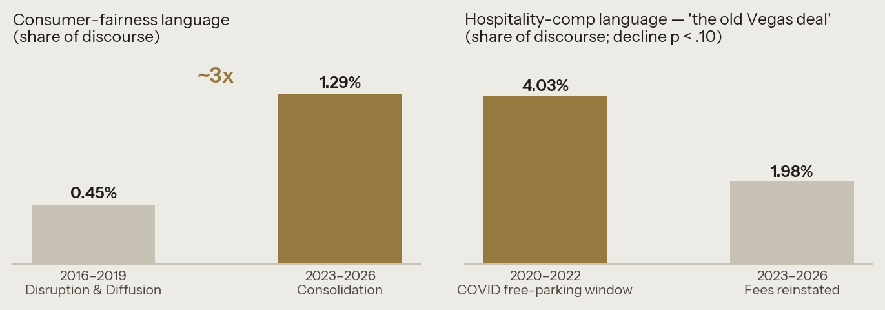

No. 1 · Pricing & Fairness
The Price of Arrival: Ten Years of Paid Parking on the Las Vegas Strip
What a decade of data says about charging for what was always free — and why the grievance never faded.
In January 2016, MGM Resorts ended six decades of free parking on the Strip. Caesars and Wynn followed within months; Wynn reversed course in 2018, citing its hospitality mission; COVID suspended fees in 2020; they returned; and by 2023, when the Venetian finally began charging, the old deal was gone everywhere. This study tracks the full arc — disruption, suspension, reinstatement, consolidation — through 50 archival sources and a decade of Nevada Gaming Control Board revenue data.
The headline finding contradicts what pricing theory predicts. Standard price-fairness models expect customer grievance to fade as a new pricing norm settles in. It did not. Consumer-fairness language in public discourse nearly tripled from the introduction period to the consolidation period, while operators' own justification language never changed across ten years. A petition launched in February 2026 — ten years after the first fee — gathered more than 18,000 verified signatures within four months. Meanwhile, locals-market revenue diverged from Strip revenue faster after the fees than before.
The lesson for any operator considering a free-to-fee transition: when a free amenity is part of the implicit deal customers feel they own, charging for it is not a price change — it is a covenant change, and the resentment compounds rather than decays.
Download the white paper (PDF)
Consumer protest bookends the decade. Figure from the white paper; author's data.